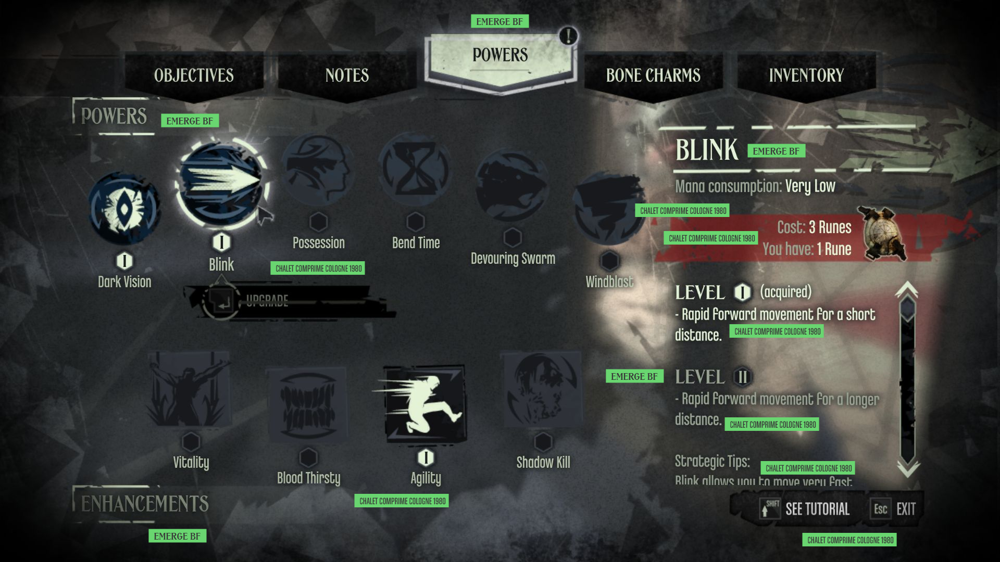
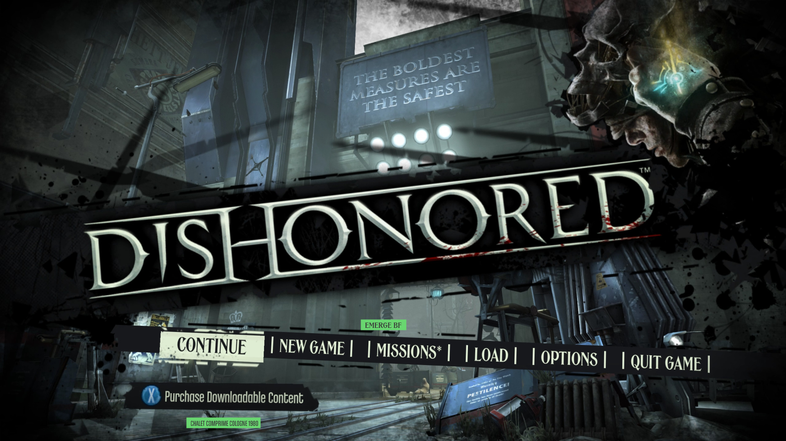
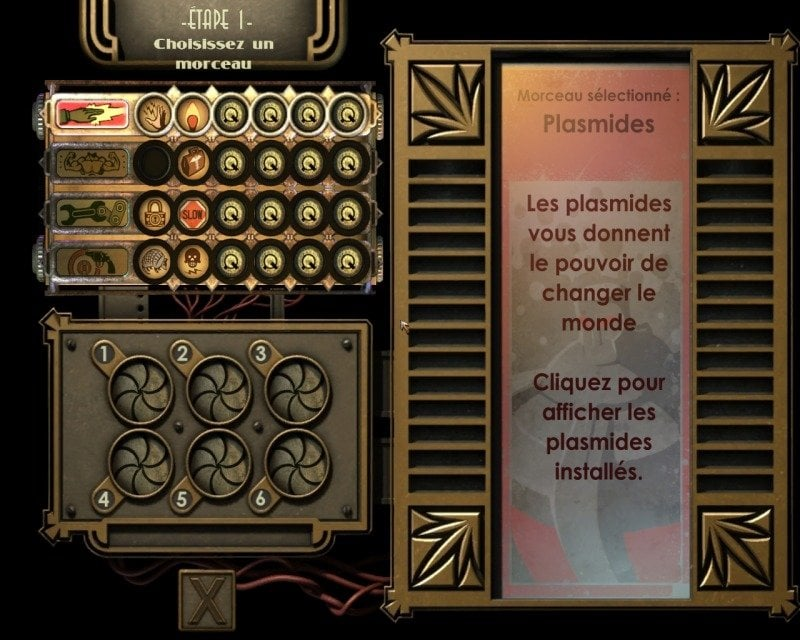
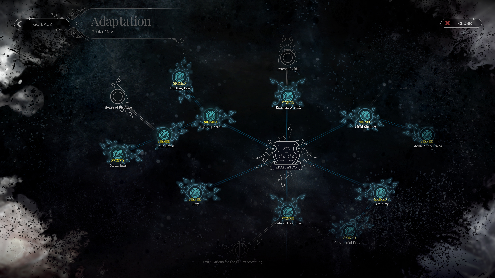
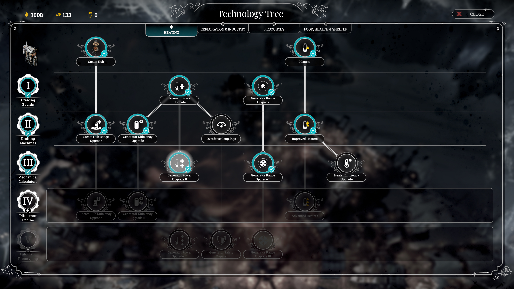

01 / Dishonored
PLACA EDITORIAL · SILHUETA · CONTRASTE

Poderes · etiquetas verdes são anotações do GameFontLibrary.
Hierarquia tipográfica · captura do mesmo catálogo.Adaptar: recortes, seleção por valor e ícones em silhueta. Título e dado com vozes diferentes.
Não copiar: símbolos, menu full-screen, fundo e textura sobre cada número.
02 / BioShock
CHASSI · ENCAIXE · ART DÉCO

Plasmídeos / Gene Bank do primeiro jogo · captura em francês.Adaptar: encaixes circulares, moldura escalonada e detalhe como ficha de catálogo.
Não copiar: mascote, marca, máquina ou a disposição integral da tela.
03 / Frostpunk
NÓS · NÍVEIS · ESTADO DE DISPONIBILIDADE

Livro de Leis · Interface In Game.
Árvore tecnológica / aquecimento · Interface In Game.Adaptar: marcos laterais, aros de seleção e conexões inequívocas de progressão.
Não copiar: leis, cidade radial ou mecânicas de temperatura inexistentes no nosso GDD.